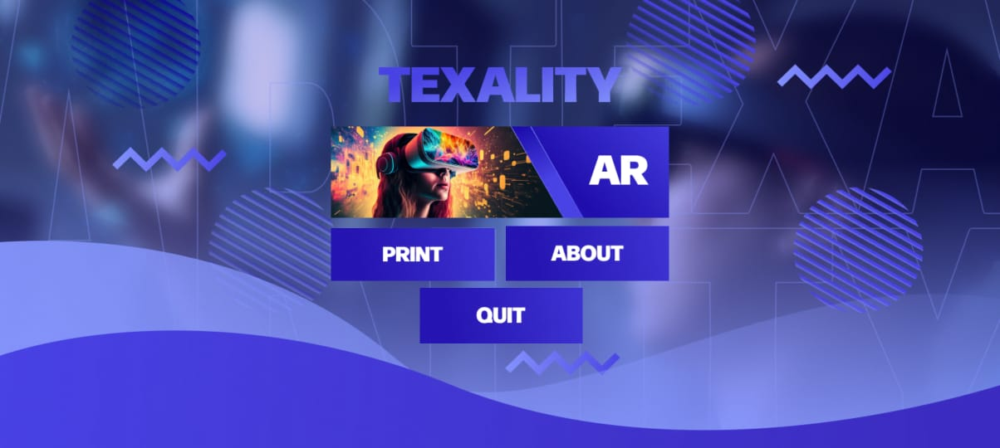
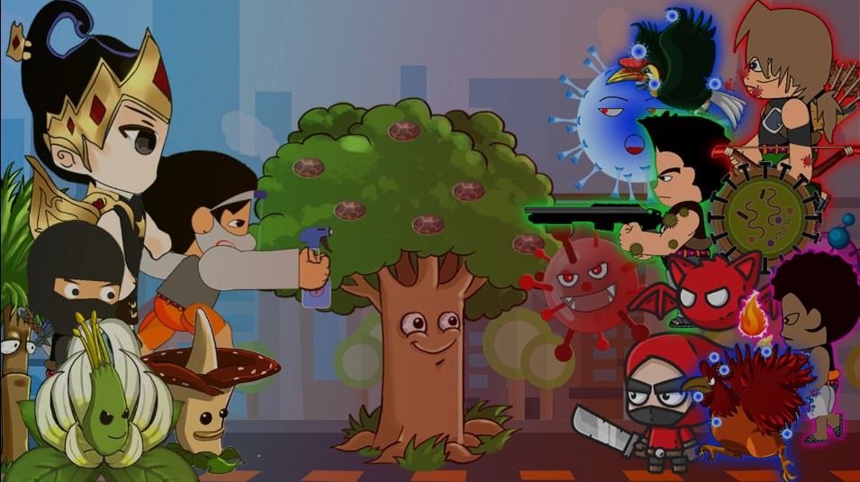

WEB APP · HTML/CSS
Perpustakaan
Akses koleksi sekolah, lebih gampang.
Technology Innovation Texar
Ruang ekskul untuk siswa yang ingin mengubah rasa penasaran jadi website, aplikasi, dan karya digital yang bisa dipakai orang.
// tempat ide ketemu eksekusi
tixar@lab:~$
Build log / pilihan karya
Setiap proyek adalah latihan menemukan masalah, menyusun solusi, lalu merilisnya bersama tim.
WEB APP · HTML/CSS
Akses koleksi sekolah, lebih gampang.

PLATFORM · UI DESIGN
Ruang digital untuk aktivitas sekolah.
LEARNING · FRONTEND
Belajar materi sekolah dengan alur jelas.
VOTING · PRODUCT
Suara siswa, dalam satu tempat.
EVENT · WEB
Informasi pemilihan yang mudah dibaca.

CAMPAIGN · DESIGN
Kampanye digital dengan karakter sendiri.
Cara bertumbuh
01 / MULAI
Kenali HTML, CSS, JavaScript, dan cara desain bekerja untuk web.
02 / BANGUN
Ubah brief kecil jadi halaman, antarmuka, atau fitur bersama teman.
03 / RILIS
Rapikan portofolio dan presentasikan hasil di depan komunitas.
Sebelum mulai
TIXAR adalah ekstrakurikuler Technology Innovation Texar: tempat belajar pemrograman, desain, dan membuat produk digital bersama.
Tidak. Jalur belajar dimulai dari fondasi dan dibangun bertahap bersama anggota lain.
Bawa rasa ingin tahu. Perangkat dan kebutuhan pertemuan bisa dikonfirmasi lewat pengurus.
Next build starts with you
Mulai perjalananmu membuat sesuatu yang nyata bersama TIXAR.
Tanya cara gabung